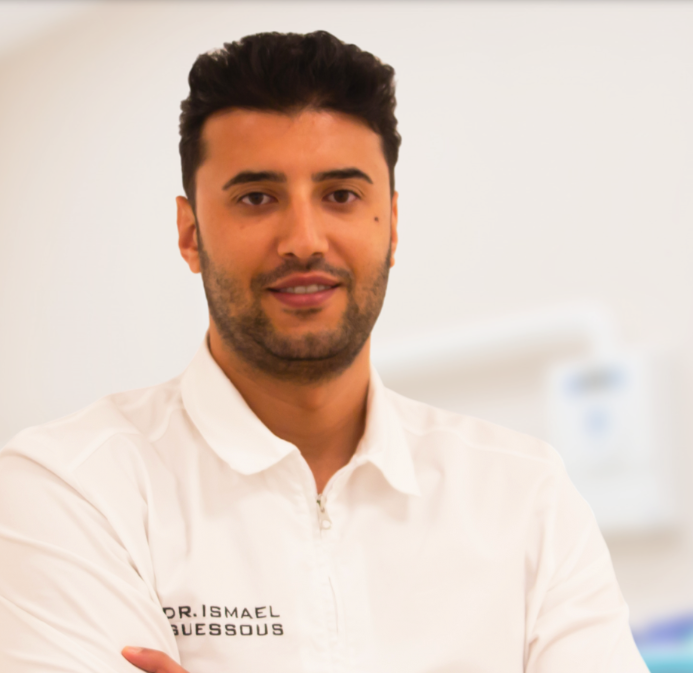

Con il Dott. Ismael Guessous, chirurgo orale specializzato in implantologia e riabilitazioni complesse: un percorso di cura su misura, tra le sedi di Monopoli e Bari.
Compila il form di prenotazione: ti richiamiamo per fissare un appuntamento nella sede più comoda per te.
Vai al Form di PrenotazioneTi porta alla pagina di richiesta appuntamento.
Ogni trattamento è affidato a professionisti altamente qualificati, costantemente aggiornati sulle più recenti tecniche odontoiatriche.
Utilizziamo strumenti e metodologie moderne per garantire diagnosi precise e interventi minimamente invasivi.
Ascoltiamo con attenzione le tue esigenze, costruendo insieme un piano terapeutico su misura. La fiducia è la base del nostro lavoro.
Un punto di riferimento per chi desidera riacquistare funzionalità e bellezza del sorriso con impianti sicuri, estetici e duraturi.

Il Dott. Ismael Guessous rappresenta un punto di riferimento per l'implantologia dentale e le riabilitazioni complesse. Con un'esperienza consolidata e un approccio umano e attento, accompagna ogni paziente in un percorso di cura su misura, garantendo risultati sicuri, duraturi e dall'elevato valore estetico.
L'impianto dentale è una radice artificiale in titanio biocompatibile che viene inserita nell'osso mascellare o mandibolare per sostituire un dente mancante. Una volta integrato con l'osso (osteointegrazione), diventa il supporto per una corona, un ponte o una protesi fissa, restituendo funzionalità masticatoria ed estetica naturale.
Il percorso prevede una prima visita con esami diagnostici digitali, l'inserimento chirurgico dell'impianto, il periodo di osteointegrazione (variabile in base al caso) e infine l'applicazione della protesi definitiva. Nei casi di carico immediato, l'impianto e una protesi provvisoria vengono applicati nella stessa seduta o entro 24-48 ore.
Per garantire risultati eccellenti e duraturi, utilizziamo impianti dentali di produzione italiana, realizzati con titanio puro e biocompatibile, nel pieno rispetto degli standard di qualità e sicurezza europei.
Questi impianti favoriscono un'osteointegrazione ottimale, permettendo all'osso mascellare di integrarsi perfettamente con la struttura dell'impianto. Il risultato è una stabilità eccezionale della protesi, una guarigione più rapida e una maggiore tutela della salute dei tessuti circostanti.
Prenota OraL'intervento viene eseguito in anestesia locale ed è generalmente ben tollerato: durante la procedura non si avverte dolore. Un lieve fastidio nei giorni successivi è normale e viene gestito con una terapia farmacologica mirata, prescritta caso per caso.
Ogni intervento è preceduto da una valutazione approfondita con esami diagnostici digitali di ultima generazione, per garantire la massima precisione e sicurezza.
È la tecnica più diffusa e consolidata. Dopo l'inserimento dell'impianto in titanio nell'osso mascellare o mandibolare, si attende il processo di osteointegrazione prima di posizionare la protesi definitiva.
Consente l'inserimento dell'impianto e l'applicazione di una protesi provvisoria nella stessa seduta o entro 24-48 ore. Ideale per chi desidera ridurre i tempi di trattamento e tornare subito a sorridere.
Soluzioni avanzate per riabilitare un'intera arcata dentale con solo 4 o 6 impianti, su cui viene fissata una protesi fissa. Tecnica minimamente invasiva, indicata anche in caso di ridotta quantità di osso.
Consente di inserire l'impianto immediatamente dopo l'estrazione del dente naturale, evitando un secondo intervento e riducendo tempi e costi.
In caso di mancanza di osso sufficiente, ricorriamo a tecniche rigenerative per ricostruire il volume osseo e rendere possibile l'inserimento dell'impianto in sicurezza.
Ogni paziente rappresenta un caso unico: il costo dipende dal numero di impianti necessari, dal tipo di tecnica scelta e dalle eventuali esigenze di rigenerazione ossea. Durante la prima visita, nella sede di Monopoli o in quella di Bari, riceverai un piano di cura personalizzato e un preventivo trasparente, senza sorprese finali. Sono disponibili modalità di pagamento agevolate.
Richiedi il Tuo Preventivo Personalizzato"Professionali e cordiali, oltretutto lo studio si presenta pulito e spazioso. Sia la reception che il servizio medico sono perfetti. Lo consiglio sicuramente."
"Ottima struttura, personale gentile e paziente, in particolare con i bambini sono molto disponibili."
"Molto professionali, prezzi imbattibili. Il Dott. Ismael Guessous si è dimostrato un eccellente chirurgo orale, attento e scrupoloso. Mi ha messo subito a mio agio spiegandomi ogni passaggio con chiarezza."
Apollonia Clinica Dentale
Via Flaminio Valente, 21 — 70043 Monopoli (BA)
Tel: 080 352 5644
Email: info@impiantidentalipuglia.it
Servizi Odontoiatria Bari
Via Giuseppe Capruzzi, 184 — 70100 Bari (BA)
Tel: 080 556 9965
Email: info@impiantidentalipuglia.it
Con una corretta igiene orale e controlli periodici, un impianto dentale può durare 15-20 anni o più, mantenendo stabilità e funzionalità nel tempo.
Sì. Grazie a tecniche di rigenerazione ossea guidata e a soluzioni come l'All-on-4, è possibile procedere anche in presenza di una ridotta quantità di osso.
Dipende dalla tecnica scelta: con il carico immediato si può tornare a sorridere in 24-48 ore, mentre con la tecnica tradizionale il percorso completo, tra osteointegrazione e protesi definitiva, richiede generalmente alcuni mesi.
Sì, gli impianti moderni offrono un risultato estetico molto naturale, sia nella forma che nel colore, integrandosi armoniosamente con il resto della dentatura.
Nei giorni successivi è normale un lieve gonfiore o fastidio, gestibile con la terapia prescritta. Verranno programmati controlli periodici per monitorare l'osteointegrazione.
In questi casi si può ricorrere a soluzioni come l'All-on-4 o l'All-on-6, che permettono di riabilitare un'intera arcata con una protesi fissa supportata da soli 4-6 impianti.
Un primo consulto per capire quale soluzione implantare è più adatta a te, tra la sede di Monopoli e quella di Bari.
Prenota Ora